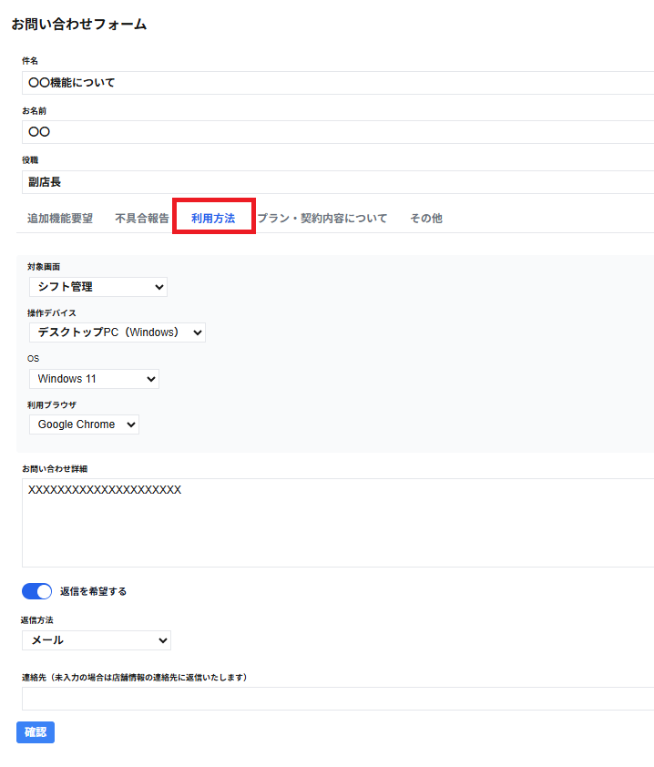

利用方法のタブを選択した場合は以下の項目が表示されます。
・対象画面(セレクトボックス、初期値は空白)
対象画面をクリックすると、以下の項目が表示されます。
以下の項目から対象画面を選択できます。
・ダッシュボード
・キャスト一覧
・タイムライン
・シフト管理
・シフト追加
・シフト詳細
・出勤詳細
・退勤明細
・予約・接客一覧
・予約詳細
・予約追加
・接客詳細
・休憩追加
・休憩詳細
・アナリティクス
・データ管理
・店舗情報
・お知らせ
・お問い合わせ
・操作デバイス(セレクトボックス、初期値は空白)
操作デバイスをクリックすると、以下の項目が表示されます。
以下の項目から操作デバイスを選択できます。
・デスクトップPC（Windows）
・デスクトップPC（Mac）
・ノートPC（Windows）
・ノートPC（Mac）
・Chromebook
・Linux PC
・タブレット・スマートフォン
・その他・不明
・OS(セレクトボックス、初期値は空白)
OSをクリックすると、以下の項目が表示されます。
以下の項目からOSを選択できます。
・Windows 11
・Windows 10
・Windows 8
・Windows 7
・Windows（その他）
・Windows（不明）
・macOS Sequoia 15
・macOS Sonoma 14
・macOS Ventura 13
・macOS Monterey 12
・macOS Big Sur 11
・macOS（その他）
・macOS（不明）
・Linux
・その他・不明
・利用ブラウザ(セレクトボックス、初期値は空白)
利用ブラウザをクリックすると、以下の項目が表示されます。
以下の項目から利用ブラウザを選択できます。
・Google Chrome
・Microsoft Edge
・Mozilla Firefox
・Safari
・Internet Explorer
・その他・不明
